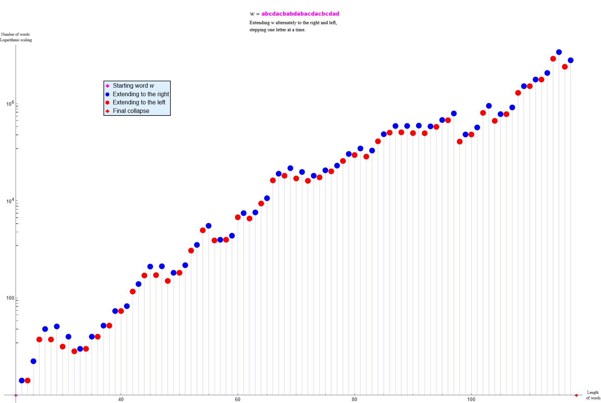

An illustration of the a2f extensions of the unfavourable word w = abcdacbabdabacdacbcdad
– an extremely challenging case
Here we take an abelian square-free (a2f) word of length 22 and try to extend it in the pattern-free, i.e. a2f, manner to the right (blue) and to the left (red) with all possible letters over {a, b, c, d}. The length of the words increases only by 1 at a time (alternately to right and left). All possible words are gathered to a list. For each word there are four possibilities: either it can be continued with 3, 2, 1, or 0 letters. The case of 0 letters means the word cannot be continued at all. If no words of the list can be continued, then we get an empty list and the computation ends. The resulting list consists of unfavourable factors that start from the originally given word, and this starting word is ‘in the middle’ of every non-empty word in the list. Indeed, the computation below does end with an empty list.
In the illustration below, the word w = abcdacbabdabacdacbcdadof length 22 turns out to be unfavourable in a monsterious manner. The blue point, just before the final collapse, is at (117, 7866918). In spite of this, not a single extension is possible to the left (which would otherwise lead to the words of length 118).

In a way, this explains why it has been so difficult to find abelian square-free endomorphisms over four letters. At present we know, for example, that over four letters about 60 % of the abelian square-free words of length 24 are indeed unfavourable (bad).
© 2026 V. Keränen
June 1, 2026
Permission to use, copy, and distribute the material above for any non-commercial purpose is hereby granted without a separate permission, provided that the source is mentioned.